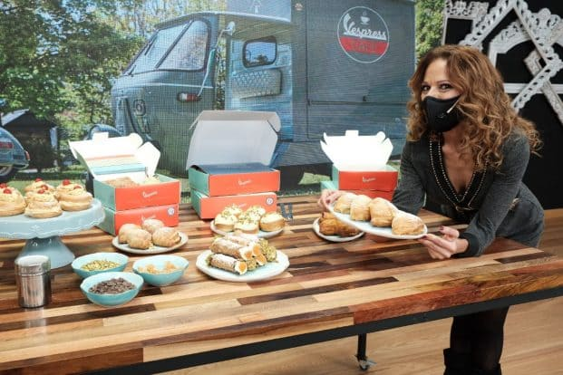

5 Pastelerías Italianas más famosas y recomendadas
La pastelería italiana es reconocida por la excelencia en la elaboración de postres y dulces de alta calidad, y existen varias pastelerías muy populares en toda Italia y el mundo. Algunas de estas pastelerías han sido fundadas hace siglos y son conocidas por su especialidad en ciertos productos, como el panettone, chocolates y helados artesanales, o una amplia variedad de pasteles y dulces tradicionales.
1. Le Altre Farine Del Mulino

Es una panadería, una pizzería y una cafetería, todo en uno y, una vez más, todo está libre de gluten.
Un lugar agradable, lleno de sabores y colores. Los cannoli y croissants sin gluten son absolutamente increíbles.
También te llenarán amablemente los cruasanes si te apetece. La cantidad de tartas,
bignè (profiteroles fritos al estilo italiano rellenos de crema pastelera) fue abrumadora.
Y luego pasar al otro mostrador que está lleno de pizza italiana fresca, paninis y arancini y lo mejor todo absolutamente todo sin gluten.
Contacto:
2. La pastelería de Carlo

Carlo's Bake Shop, generalmente conocida como Carlo's Bakery, es una cadena de pastelerías estadounidense
fundada en 1910 con raíces italianas. La tienda principal de la cadena se ubica en Hoboken, Nueva Jersey y
se volvió famosa tras aparecer en el programa de televisión Cake boss que es emitido por TLC desde 2009 hasta la actualidad.
El programa es protagonizado por Buddy Valastro, el dueño de la pastelería.
Aquí podrás encontrar y deleitar tu paladar con los mejores cannolis y sfogliatella de los EE.UU
Contacto:
3. Cafe Sacher y Confitería
Ambos locales son visita obligada en Viena a pesar de ser un poco turísticos, pues son una rémora del Imperio Austríaco,
con su mobiliario lujoso y recargado y sus camareros pomposos. Además podremos disfrutar de especialidades locales como la
mencionada tarta Sacher o el Apfelstrudel (una especie de tarta de manzana que se sirve con nata) y un sinfín más de dulces y tartas.
Contacto:
4. Caffé María
En el Caffé María en Erice (Sicilia) podemos degustar las creaciones de María Grammatico, una de las mejores reposteras de Italia
y del mundo. Su local es reconocido tanto por sus creaciones (mazapanes, cuscinetti, cannoli de ricotta...) como por su impresionante
terraza con vistas. Como curiosidad, recibió su formación pastelera en el orfanato de Carlo de Erice, donde se crió, y al salir se dedicó
a lo único que había aprendido a hacer: endulzar la vida a los demás.
Contacto:
5. Vespress

Café Vespress es una cafetería de especialidad móvil.
Montada sobre una Vespa Ape Car tiene como propuesta celebrar la italianidad a través de sus grandes iconos como el café expresso,
la Motoneta Vespa y la pastelería tradicional italiana; Inspirados en estos íconos, Mónica Jakubavicius, cocinera, pastelera,
especialista en chocolate y su hermano Eric, amante de las motos, el café y la buena cocina, sumaron sus pasiones para crear a
fines del 2016 Café Vespress.
La propuesta es un homenaje a la italianidad y sus tradiciones como símbolo de estilo, combinados con la libertad de la movilidad urbana.
Contacto:
En conclusión
Como pueden ver hay muchas propuestas interesantes, llenas de sabor, lujo y tradición esperando por nuestros paladares, esto es una
pequeña muestra de esta maravillosa gastronomía que vale la pena conocer.